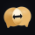
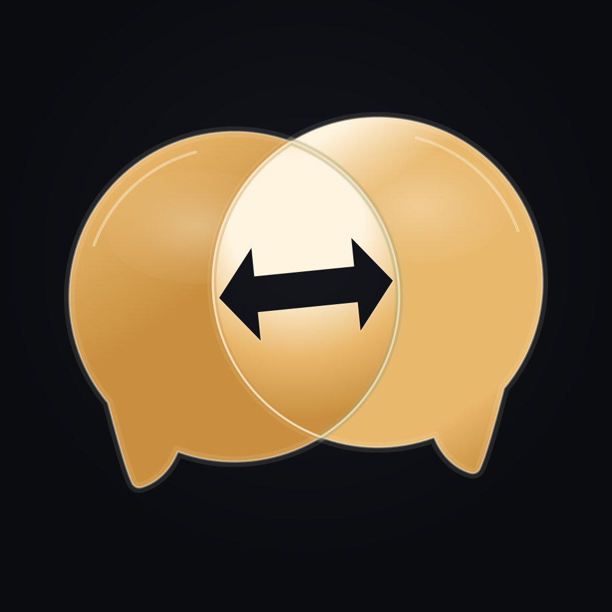
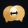
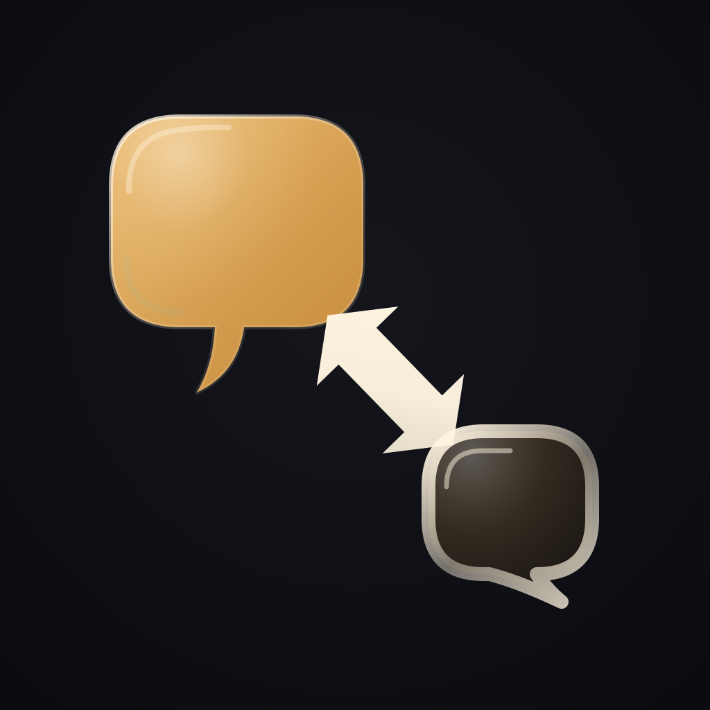
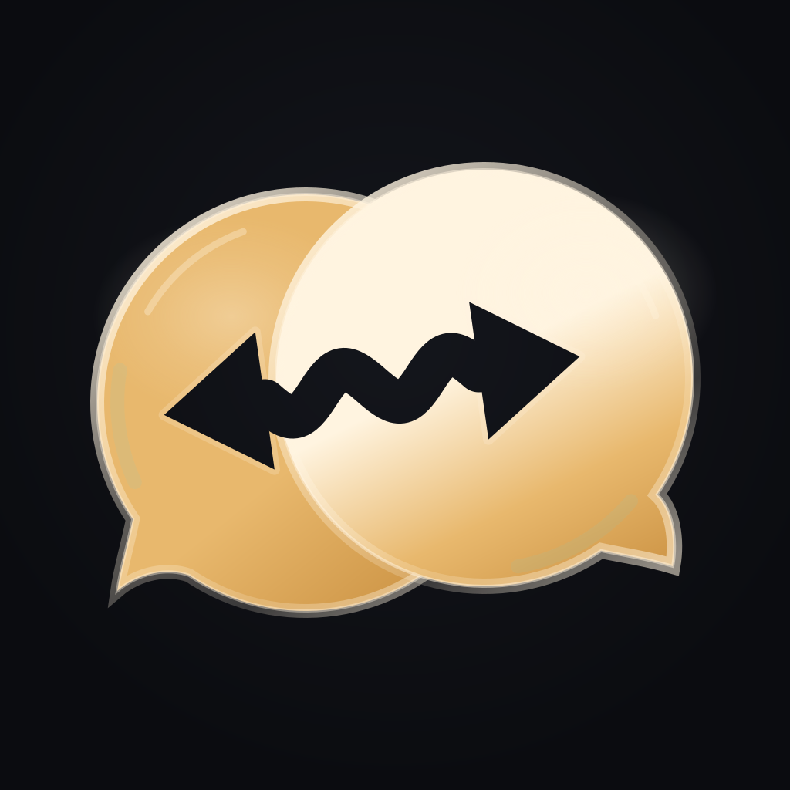

对译 App Icon — 候选对比
1024×1024，深墨 #0B0C10 + 暖琥珀 #E8B86D。两个对话气泡、一个交换箭头。以下渲染用于选择，不是 App Store 资产。

40Overlapping Lens v2
两个气泡交叠成一枚发光的透镜，重叠区被切成一条水平双向箭头。三路评审一致把它列为第一：它是唯一在 60/40 px 仍读作“两个气泡 + 双向交换”的候选，也是唯一有可信 Liquid Glass 层次（半透明叶瓣、透镜、细边光、控制在 0.12 的冷反射）的候选。
#000 背景
#F2F2F7 背景
grayscale
这一版只做了一次对比度修正，没有改几何：右气泡从奶白恢复为琥珀，透镜中心从大面积 #FFF4E0 收到 #FFF4E0 → #F2D6A0 → #E8B86D，透镜下缘从 12 px / 0.35 收到 6 px / 0.5。目的是让 60/40 px 不再把透镜和右气泡糊成一块奶油色。
修正前 vs 修正后
同一几何，只改填充与透镜边缘。注意 60 px 下右侧是否还能读出“第二个气泡”。
BEFORE overlapping-lens


右气泡顶部从 #FFF4E0 开始，和透镜的奶油核心连成一片；60 px 下两个气泡的边界消失。
AFTER overlapping-lens-v2
右气泡保持琥珀，透镜成为一枚独立的浅色叶瓣；60/40 px 下三个值（琥珀 / 浅透镜 / 墨色箭头）分得开。
Runner-up 与其余候选
Mirrored Bubbles
左右镜像、中央竖直负空间箭头。60 px 下箭头最粗（箭杆 5.2 px），但两个琥珀面会熔成一块“金板/打开的书”，竖直箭头读作同步/传输。要修得动结构（开缝、错位、箭头改横向），不是润色。

Asymmetric Listen
大琥珀气泡 + 小深色气泡 + 白色斜箭头。深色“听者”在 60/40 px 直接消失，白箭头读作 resize/send，单向的主从关系也不符合“互译”。

Waveform Exchange
声波穿过两个气泡化成箭头。1024 很有辨识度，但 40 px 下正弦波读作均衡器/波浪线；修掉它就收敛回 Overlapping Lens，保留它就过不了小尺寸。

60 px 直接对比
左：Mirrored Bubbles（箭杆更粗，但气泡合并）。右：Overlapping Lens v2（三个值分得开，箭杆更细）。如果你把“箭头必须最粗”放在第一位，Mirrored Bubbles 的返工方向值得另开一轮。
要你拍板
- A（推荐）：用
overlapping-lens-v2进实现。它的 60/40 px 读法、Liquid Glass 层次和三路评审都最好。 - B：用
mirrored-bubbles进实现，但先做一轮结构返工（横向箭头、开缝、错位），否则会读成“金板 + 同步箭头”。 - C：保留 Overlapping Lens 的构图，但再做一轮箭头几何（箭杆 60→72、箭头高 156→172、轴线拉平），让小尺寸箭头更粗。这会改变已验证的 796×624 内容框，需要重新量安全区。
- D：换一个方向；告诉我你看到的问题（气泡太多？透镜太亮？箭头太细？），我再出一轮。
完整四宫格与每个候选的构造说明在 index.html；评审与理由在 Prototype/AppIcon/RECOMMENDATION.md。